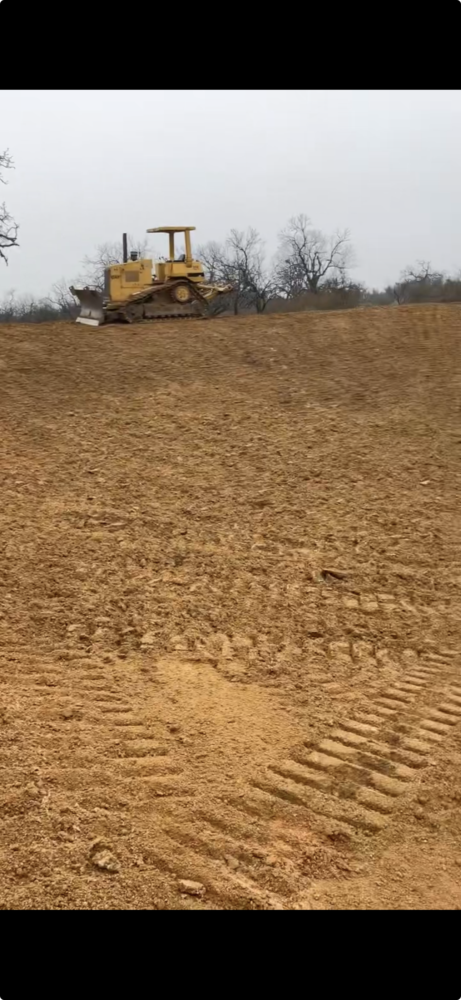
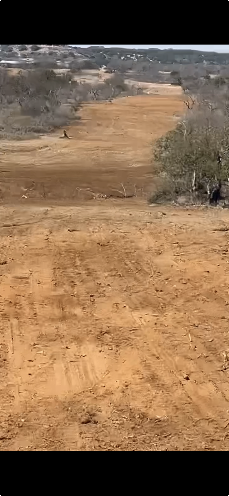

Our Work
Out in the Field



Mason, Texas & Central Texas
Professional construction services serving Mason, Texas and surrounding areas. From land clearing to site preparation, we handle projects of all sizes across Mason County and Central Texas.
Get a Free QuoteConstruction Companies Mason Texas
Flying A Construction is a locally owned and operated construction company by Jimroy Atchison, proudly serving ranchers and landowners across Mason, Texas, Mason County, and throughout Central Texas. As one of the top construction companies in Mason, Texas, we know this land because it's our land — and we bring the equipment, experience, and work ethic to get the job done without the runaround.
Whether you're clearing new pasture, prepping a build site, or cleaning up overgrowth in Mason, TX, we show up on time, do the work right, and leave your property better than we found it. When you search for "construction companies mason texas," you're looking for reliability and quality — that's exactly what we deliver.
What We Do
Full property clearing for pasture, development, or fire breaks across Mason County. We handle dense brush, saplings, and overgrowth with the right equipment for the job.
From single stumps to large-scale timber removal in Mason, TX. We take down, chip, haul, and grind so you're left with clean, usable land.
Getting your Mason, Texas land ready for a home, barn, or outbuilding. We grade, clear, and prep so your contractor can break ground without delays.
Cut and maintain ranch roads, low-water crossings, and private driveways in Mason County. We keep your property accessible year-round.
Stock pond cleaning, construction, and drainage solutions for Texas ranches. Good water management makes better ranching.
Clear cedar, mesquite, and overgrowth from fence lines in Mason, TX to protect your investment and keep your boundaries visible and maintained.
Our Work


Why Flying A
We live here, work here, and care about this community. You'll deal directly with the owner — no middlemen, no call centers. When you need construction companies in Mason, Texas, you need local expertise.
We run well-maintained machines suited for Central Texas terrain — from thick cedar country to rocky hillside properties in Mason and surrounding areas.
We give you a straight quote and stick to it. No surprise fees, no nickel-and-diming after the job is done. That's the Flying A Construction promise.
We respect your time and your land. When we say we'll be there, we'll be there — and we don't leave until the job is finished right.
Get in Touch
Give us a call and we'll talk through your project, answer your questions, and set up a time to walk the property. Serving Mason, Texas and all of Central Texas.
Call for a Free Quote (325) 792-6969Mon – Sat · Serving Mason, Texas & Surrounding Areas